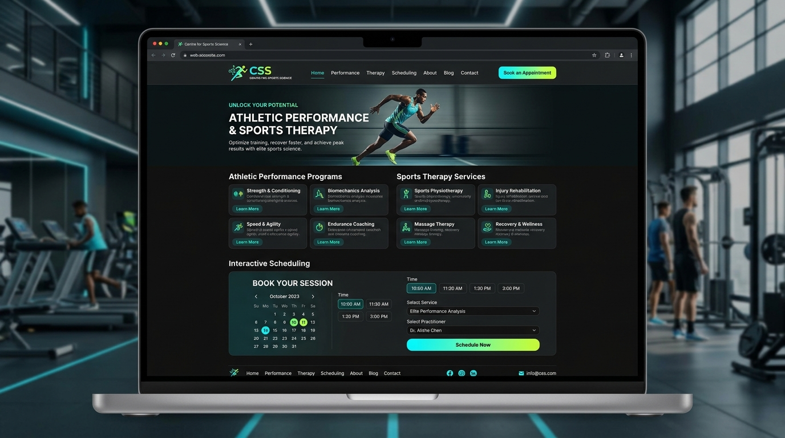

Centre for Sports Science Web Portal
A modern, fast multi-page website for a sports clinic with online service booking, treatment details, and a validated patient inquiry form.
FRONTEND: React 18
&
Vite
BACKEND: PHP REST
API
DATABASE: MySQL
// HOW IT WAS BUILT:
Fast React frontend bundled with Vite for sub-second page loads, connected to a PHP API that validates user inputs and securely stores consultation requests in MySQL.
- Built with React and Vite so pages load instantly on both mobile phones and laptops.
- Connected a PHP and MySQL backend with safe database queries to protect patient inquiries from spam and errors.
// HARDEST BUG SOLVED:
Fixed a live-server connectivity issue where contact forms failed to save due to mismatched
database configuration settings.